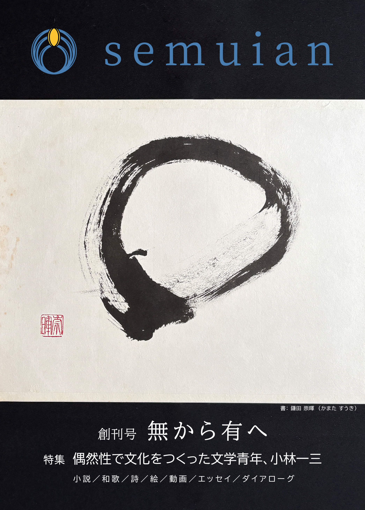

新刊情報
文芸誌「semuian」創刊号

2025年9月14日（日）開催予定の「文学フリマ大阪13」で初頒布いたしました。当日ご来場いただいた皆さま、誠にありがとうございました！
オンライン販売
2025年10月3日（金）より、ジルコヴァパートナーズ合同会社（ https://zelkova-partners.jp/ ）が運営するオンラインストアでPDFをダウンロード購入いただけるようになりました！ぜひご覧いただけましたら幸いです。どうぞよろしくお願いいたします。
https://note.com/zelkova_partners/store
概要
学問の神様・菅原道真公と太宰府・宝満山の龍女の交流を描くファンタジー小説「東風」をはじめ、書、詩、和歌といったアート作品の他、禅のある暮らしを丁寧に綴る随筆、会社経営や役員経験者による対談、日本を代表する起業家に関する特集など、「和」や「承継」を大きな柱に据えた多彩な作品をお届けする文芸誌です。
文学がお好きな方はもちろん、国内外でビジネスを展開されている方や家業を営んでおられる方、これまでの人生を振り返ったり、これからの生き方を考えたい方にも楽しんでいただける、仕事や人生のヒントになるような一冊です。
お知らせ
2025年
- 10月3日
文芸誌「semuian」創刊号のオンライン販売を開始しました。詳しくは新刊情報をご覧ください。 - 9月1日
小説「東風」 老松#1 を公開しました。新刊情報を更新しました。 - 8月25日
小説「東風」 味酒安行#1 を公開しました。 - 7月25日
小説「東風」 龍女の双子の兄#1 を公開しました。 - 6月25日
小説「東風」 飛梅#1 を公開しました。 - 5月25日
小説「東風」 野狐#1 を公開しました。 - 4月25日
小説「東風」 飛梅の前世#1 を公開しました。 - 3月25日
文学フリマ大阪13（2025年9月14日（日））に出店します。詳細はnoteをご覧ください - 2月25日
ホームページを公開しました。小説「東風」 菅原道真公#1 を公開しました。